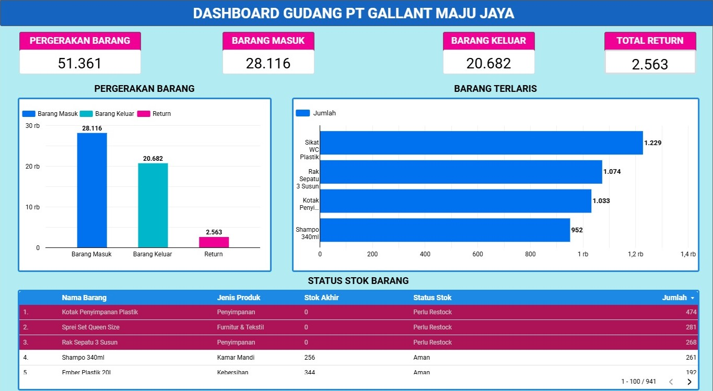
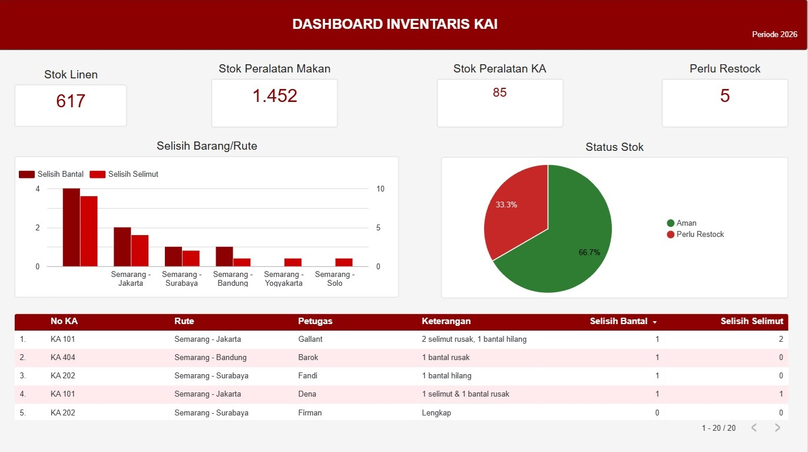
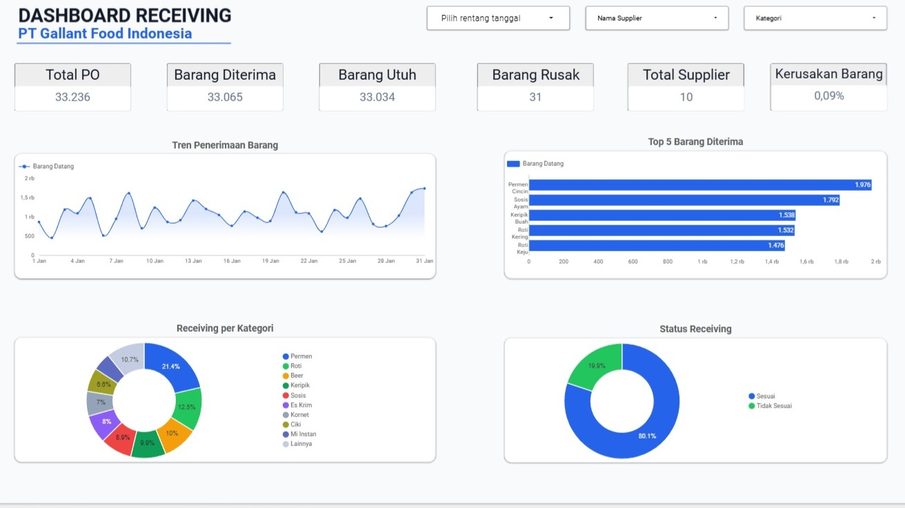
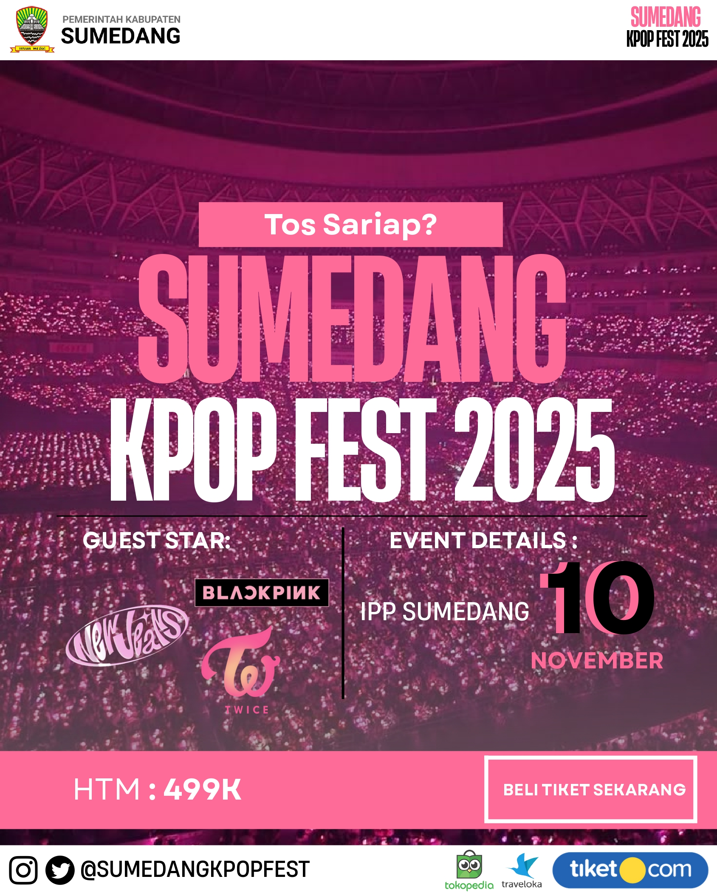
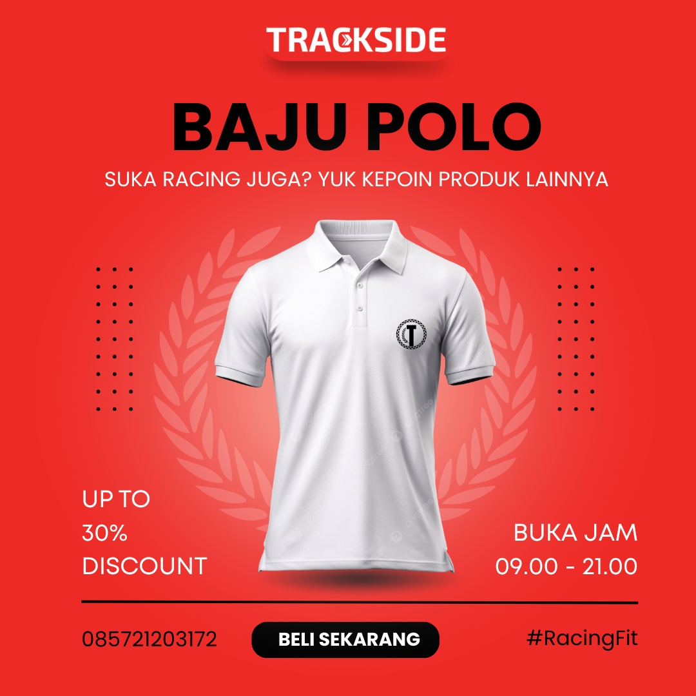

Projects & Karya
Kumpulan project data dashboard, analisis, dan desain visual komunikasi yang saya kerjakan sebagai bagian dari proses belajar.
Dashboard Pergerakan Barang di PT Gallant Maju Jaya
PT Gallant Maju Jaya · Excel & Looker Studio
Tujuan Project
Membuat dashboard monitoring gudang untuk memvisualisasikan aktivitas barang masuk, barang keluar, return, dan kondisi stok guna mendukung pengambilan keputusan pengelolaan persediaan.
Dataset
Data simulasi (dummy data) buatan Claude AI. Berisi 1.000 transaksi gudang dalam format CSV mencakup data persediaan, pergerakan barang, dan return.
Tools
Microsoft Excel untuk pengolahan data & Pivot Table, serta Looker Studio untuk visualisasi data interaktif.
Dashboard Preview
Lihat Full Dashboard
Simpan screenshot dashboard kamu dengan namadashboard-1.jpg di folder images/
Key Insights
Arus Barang Masuk Lebih Tinggi dari Barang Keluar — Persediaan masih cukup aman namun perlu pemantauan agar tidak terjadi penumpukan stok pada slow moving product.
Transaksi Return Sangat Rendah — Total return sejumlah 2.563 unit dari total 51.361 pergerakan barang, menunjukkan kualitas pengiriman yang baik.
Produk Terlaris Didominasi Kategori Kebutuhan Rumah Tangga — Kategori ini konsisten menjadi top seller setiap bulannya.
Terdapat Beberapa Produk yang Membutuhkan Restock — Perlu segera dilakukan pengadaan untuk menghindari kekosongan stok.
Sumber Data
Dashboard Inventaris KAI (Dummy Project)
Excel & Google Data
Tujuan Project
Membuat dashboard inventaris untuk memantau stok kebutuhan konsumen seperti bantal dan selimut, mencatat barang yang hilang ataupun rusak, serta untuk mempermudah monitoring .
Dataset
Dataset yang digunakan dalam project ini merupakan data fiktif yang dibuat untuk tujuan pembelajaran dan pengembangan dashboard. Data ini tidak berasal dari PT Kereta Api Indonesia.
Tools
Excel untuk pengolahan data serta Google Data sebagai visualisasi data.
Dashboard Preview
Lihat Full Dashboard
Simpan screenshot dengan namadashboard-2.jpg di folder images/
Key Insights
Berdasarkan data, rute Semarang - Jakarta mencatat jumlah selisih inventaris paling tinggi dibanding rute lain.
Sebagian besar stock masih tersedia, namun terdapat beberapa peralatan yang membutuhkan restock dengan segera.
Sumber Data
Dashboard Receiving Gudang PT Gallant Food Indonesia
Excel & Google Data
Tujuan Project
Membuat dashboard Receiving gudang untuk membantu perusahaan menganalisis selisih tiap barang yang diterima secara lebih detail.
Dataset
Dataset ini dibuat menggunakan rumus Rand-Between di Microsoft Excel.
Tools
Microsoft Excel untuk pengolahan data serta Looker Studio untuk visualisasi data.
Dashboard Preview
Lihat Full Dashboard
Simpan screenshot dengan namadashboard-2.jpg di folder images/
Key Insights
Selama bulan Januari 2026, PT Gallant Food Indonesia memesan sejumlah 33.236 melalui Purchase Order (PO), dengan jumlah barang yang berhasil diterimanya sejumlah 33.065 unit barang. Sebagian besar pesanan berhasil dikirim oleh supplier meski masih terdapat 171 selisih barang yang diterima.
Pada bulan Januari, barang dengan volume penerimaan tertinggi adalah permen cincin, tercatat ada 1976 dus yang telah berhasil diterima di gudang.
Sumber Data
Desain & Komunikasi Visual
Poster & Flyer · Canva
Kumpulan karya desain visual menggunakan Canva — poster, flyer promosi, dan infografis yang dibuat untuk kebutuhan komunikasi dan dokumentasi.

flyer-1.jpg
Poster Konser
Canvaflyer-2.jpg
Poster Pelatihan
Canva
flyer-3.jpg
Poster Quotes
Canva